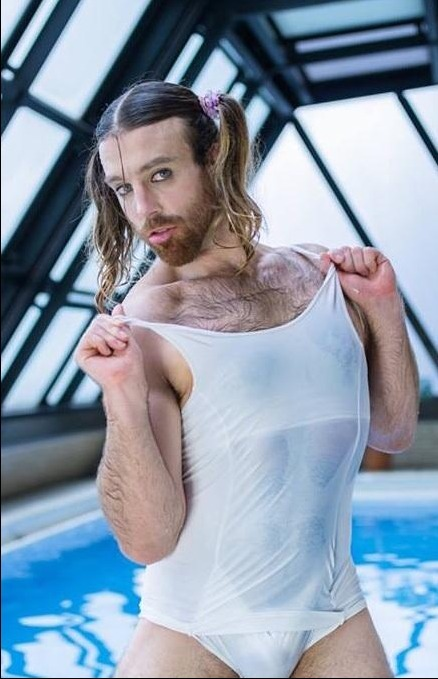

第二百二十五章 嗯哼、妖~精~哦！
“先不提这个了，你们既然是以一百万奖金为目标的话，那么现在成绩怎么样了？”
月姬略过桐人的态度问题，很自然的将话题引向了沙滩上正在举办的比赛上。
“这个我们也不清楚，不过分数应该很高吧。”莉兹贝特摸着下巴看起来很自信的样子。
“你还敢说！”莉法投以莉兹贝特不满的目光，“那、那种招客的方式，我是、是绝对不会再做了！”说着这样话语的莉法满脸的羞红。
“那种方式？”月姬很有深意的看着莉法，今天她用的是管理员账号，也就是说可以直接对系统下令，比玩家号便利很多，所以她查到了一件很有意思的事情：
本次泳衣大赛的获胜条件是——【独占大家的视线吧，沙滩的英雄就是你！】
比较浅显的理解就是尽可能多的被沙滩上的游客关注，这样就可以获得比赛的优胜。
莉法几个似乎没有发现其中的隐藏条件，也就是说……这四个到目前为止，仅仅是在卖颜值而已，看莉法捂着胸口的娇羞样子，似乎莉兹贝特还做了不少少儿不宜的事情，俗称卖肉的举动来吸引视线！
“啊——第一次成绩公布似乎要开始了，我们现在过去看看吧！”
听到月姬似乎对她和莉兹贝特刚刚怎么去收集【视线】这件事很有兴趣的样子，莉法，手忙脚乱的拉起了月姬的手向着一边走去，试图以比赛成绩的第一次公布转移月姬的视线。
“哇啊，真叫人紧张啊！”
西莉卡一脸的兴致勃勃的样子，虽然说紧张，但是看样子似乎对自己的成绩很有信心似的。
然后，少女们在莉法的带头下前往告示牌的位置去查看自己第一轮的成绩。
****************
……
43th 85 LEA 14375
……
52th 86 LUX 13952
……
58th 84 SIL 13441
59th 83 LIZ 13439
……
“咦？！！！！！”
实际成绩与四人想象的差距略大，不说前几名，连中上都没有站稳，在所有参赛者里，四人的成绩居于中下游。
“啊——啊——怎么会这样！？被人看到那种程度……”莉法羞红的脸趴在桌子上哀嚎着，被莉兹贝特当众玩弄欧派虽然让其在四人里成绩是最好的，但是和其他参赛者一笔无疑很凄惨的分数让莉法感觉没脸见人了。
“好奇怪啊！”莉兹贝特面色严肃的沉吟着，他并没有去为首战的失利而哀鸣，要说原因的话，大概是全程被自愿卖肉的只有莉法一个人吧。
“我说，路克丝，你在递给客人炒面的时候，有没有按我教你的那样挤一下？”
会这样问的莉兹贝特似乎是奇怪有着更胜于莉法女子力的路克丝的分数为什么会和莉法差距那么多。
“什么是挤一下？”
虽然有着十分豪放的胸襟，但是路克丝似乎并不明白这份宽广胸怀的某种应用方式。
“就是这样……”
莉兹贝特用力的将自己的肩膀向前靠近，似乎想要显摆下她那遗憾的乳量。
“话、话说回来……”领悟了莉兹贝特不择手段的秘诀的路克丝连忙的转移了话题，“其他参赛者都好像研究了很多啊……”路克丝真的是不擅长用那种手段去招揽客人。
“姐姐，会长大的！”一边的优纪按着姐姐蓝子的肩膀鼓励道，眼睛看了看金发的风精灵的下作乳量，最后还是摇摇头将目光落到了路克丝的身上，虽然看起来似乎差不多的尺寸，但是她们知道那才是她们的目标！
“……”
月姬耳朵动了动，眼睛无辜的眨了眨，她不明白，女孩子为什么总会在意这种莫名其妙的东西，那不过是个哺乳幼崽用的器官，大小真的重要吗？
“是啊，那些竞争对手做的都很露骨呢，刚刚有个正在攀岩的人，被人从仰角拍照拍个够！”西莉卡接着路克丝的话说道，虽然是四个人来参加比赛，但是他们是两两搭配互相协作的，这个是她和路克丝在和莉法她们会和前看到的事情。
“真、真是差劲！”虽然是被迫的，但是莉法似乎对自己之前收集【视线】的手段毫无自觉的样子。
“那就是说……”莉兹贝特司令将眼睛藏在了阴影之下，“为了能收到更多的注目，需要一些能够打动人心的什么吗？”
——不好的预感——X深有体会的莉法和对莉兹此人有所了解的路克丝以及西莉卡
——有趣的预感——X早已看穿一切的月姬
——喵？——X不明情况的蓝子和优纪
“Excuse me，g……哇哦！……girls……”
突如其来的乱入者捂着眼睛艰难的把打招呼的话语说完。
“姐姐……”蓝子和优纪怕怕的躲到了月姬的背后，然后探出小脑袋好奇的看着来访者。
“何方妖孽！”
莉法被来访者吓了一跳，手下意识的按在空无一物的腰间似乎想要拔剑的样子，莉兹贝特和西莉卡则是下意识的从自己的座位上跳开。
“你好啊，先生。”
留在原位的，除了伸出拳头的月姬，就只有那个天然巨X娘了。
“抱歉，本能反应……”
月姬收回手，轻咳一声来掩饰自己的尴尬。
虽然感觉到了向她快速移动的单位，但是眼前这只磨人的“妖精”真是让凡人的眼睛一时间难以容纳。
“不要紧……”
穿着死库水，脖子下裸露的胸膛想浓密的黑毛格外的引人注目，扎着双马尾的……嗯，的大姐将手放下，对着月姬几个露出了豪爽的笑容。
“请问各位善良的女孩们能否给我一块蛋糕呢？”
“妖精”大姐指了指桌上的蛋糕，然后双手合十，扭扭捏捏的期待的看着月姬几个。
“当然。”月姬强忍着不适将自己没有动过的蛋糕递了过去。
“诶？您要吃蛋糕吗？我这个也给您吧。”善良的路克丝也将自己的这份递了过去。
“不用了，只要一份就够了，是那个孩子想要吃……”翘着兰花指，“妖精”指了指不远处不安的四处张望的，似乎是NPC的小女孩说道，“……不过这里卖的蛋糕限量，现在已经过了那个点了，一个小时后才有再卖，所以只能拜托你们了，真的非常感谢你们的帮助！”
……
【突如其来的投票里，咱在里面发现了本书……虽然想号召诸君去投票，不过里面大佬太多，作为咸鱼，咱干不过他们，所以还是算了】